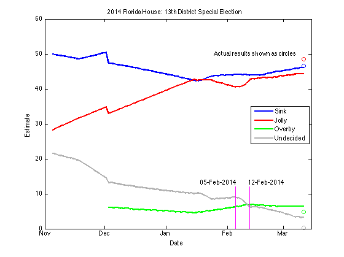
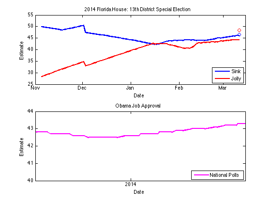
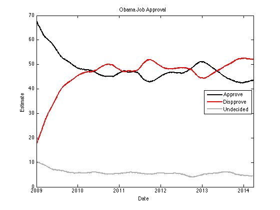
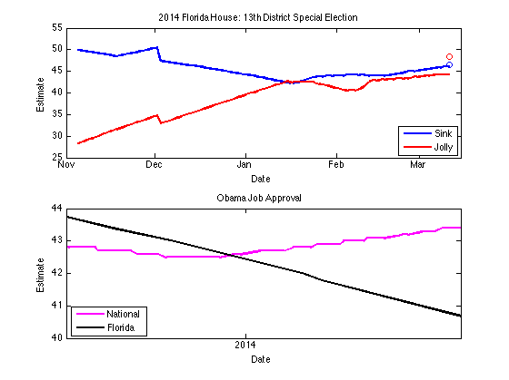

Election Poll Analysis in MATLAB
Availability of abundant data, coupled with the very impressive success of a complete outsider, Nate Silver, to make perfect calls in the last two presidential elections, turned election poll analysis one of fertile playgrounds for hobbyists to apply their data analytics skills for fun.
This analysis looks at the example of recent outcome of the special congressional election in Florida to find out: does national politics affect local elections? It also provides a ' hello world ' example of getting election poll data from Pollster website in JSON format, and automating the data pull process using object oriented programming.
Contents
- Does national politics affect local elections?
- Could this have been caused by national politics?
- All politics is local
- Has Obama sunk Sink?
- Pollster API
- Read JSON data using JSONlab
- Convert the data into a table
- Remove missing values
- Get a summmary statistics of the variables
- Plotting Obama Job Approval
- Automate with Object Oriented Programming
- Check for missing values
- Get the actual election result
- Plot the Florida 13th data
- Mixing datasets in the plot
- Have I whetted your appetite?
Does national politics affect local elections?
There was a race in Florida recently that was supposedly <http://www.huffingtonpost.com/2014/03/11/florida-special-election_n_4937699.html a test case for how Obama's healthcare law impacts the mid-term election. Or was it? Here is the election polls data from that race.

What you can see in this plot is that the number of undecided voters suddenly dropped, and both Sink (D) and Jolly (R) benefited from it. But a larger percentage of those voters ended up voting for Jolly, rather than Sink. This rapid shift happened around Feb 5 - 12. What I expected was a smoother decline of undecided over time, perhaps more accelerated toward the election day.
Could this have been caused by national politics?
If you believe the pundits, then national issues like the healthcare law affected this local election. Let's use Obama's job approval rating as a proxy to check it out.

As you can see in the plot, Obama's national poll was actually going up towards the end of this election.
All politics is local
It is more important to see the local trend rather than the national trend. So use the polls from Florida alone to see the local Obama Job Approval trend.

Has Obama sunk Sink?
Obama's Job Approval was in recovery at the national level, but his approval was actually going down in Florida during this election. But can we really say this was attributable to Obamacare?
Let me know if you have good data source to test this claim. I am wondering what was happening around the time the undecided suddenly became decided in the beginning of February. In my opinion, Obamacare doesn't fully explain this rapid shift.
National news headlines around that time:
- Philip Seymour Hoffman died
- Sochi Olympics coverage
- Farm bill passing Senate
- House approved debt limit ceiling hike
- Story about less employment under Obamacare
Nothing jumps out to me as a possible clue. Perhaps we need to look at local headlines instead. If so, then it would weaken the claim that this election was a test for a national issue.
Pollster API
Now I would like to address the programming aspect of this post.
Pollster API provides convenient access to the data from election polls. There are other websites that aggregate election polls, but this API was the easiest to use. Let's start out with a ' hello, world ' example of getting data for Obama Job Approval Ratings.
clearvars;close all;clc; baseUrl='http://elections.huffingtonpost.com/pollster/api/charts'; slug = 'obama-job-approval'; respFormat = 'json'; fullUrl = sprintf('%s/%s.%s',baseUrl,slug,respFormat); clearvars baseUrl respFormat slug
Read JSON data using JSONlab
We need a way to read JSON formatted response into MATLAB. Install <http://www.mathworks.com/matlabcentral/fileexchange/33381-jsonlab-a-toolbox-to-encodedecode-json-files-in-matlaboctave JSONlab> from FileExchange before running script, and change the addpath to your installed location of JSONlab.
addpath ../jsonlab_1.0alpha/jsonlab; data=loadjson(urlread(fullUrl)); disp(data) clearvars fullUrl
title: 'Obama Job Approval'
slug: 'obama-job-approval'
topic: 'obama-job-approval'
state: 'US'
short_title: 'Obama Job Approval'
poll_count: 2513
last_updated: '2014-03-31T14:43:41Z'
url: 'http://elections.huffingtonpost.com/pollster/obama...'
estimates: {[1x1 struct] [1x1 struct] [1x1 struct]}
estimates_by_date: {1x1035 cell}
Convert the data into a table
JSON stores data in nested tree structure like XML, so we need to convert it into a table in order to use the data in MATLAB. This is a new feature introduced in R2013b, and I like it quite a lot.
% initialize variables estimates=data.estimates_by_date; date = zeros(length(estimates),1); approve = zeros(length(estimates),1); disapprove = zeros(length(estimates),1); undecided = zeros(length(estimates),1); % loop over JSON tree for i = 1:length(estimates) date(i) = datenum(estimates{i}.date); for j = 1:length(estimates{i}.estimates) if strcmpi('approve',estimates{i}.estimates{j}.choice) approve(i) = estimates{i}.estimates{j}.value; elseif strcmpi('disapprove',estimates{i}.estimates{j}.choice) disapprove(i) = estimates{i}.estimates{j}.value; else undecided(i) = estimates{i}.estimates{j}.value; end end end % consolidate the data into a table estimates = table(date,approve,disapprove,undecided); disp(estimates(1:5,:)) clearvars date approve disapprove undecided i j
date approve disapprove undecided
__________ _______ __________ _________
7.3569e+05 43.6 52 0
7.3568e+05 43.6 52 4.4
7.3568e+05 43.5 52 4.4
7.3568e+05 43.5 52 4.4
7.3568e+05 43.5 52 0
Remove missing values
Real data is never perfect, so we need to check for missing values and remove affected rows.
% get the indices of zero values isMissing=table2array(estimates) == 0; % get the count of missing values by variable disp('number of missing values by variable') disp(array2table(sum(isMissing),'VariableNames',... estimates.Properties.VariableNames)); disp('rows to drop for approve/disapprove') disp(estimates(isMissing(:,2),:)) obamaDecided = estimates(~isMissing(:,2),1:3); obamaUndecided = estimates(~isMissing(:,4),[1 4]); clearvars isMissing
number of missing values by variable
date approve disapprove undecided
____ _______ __________ _________
0 2 2 199
rows to drop for approve/disapprove
date approve disapprove undecided
__________ _______ __________ _________
7.3515e+05 0 0 4
7.3382e+05 0 0 9.6
Get a summmary statistics of the variables
This gives you the min, max and median for numerical variables.
summary(obamaDecided)
Variables:
date: 1033x1 double
Values:
min 7.3374e+05
median 7.3468e+05
max 7.3569e+05
approve: 1033x1 double
Values:
min 42.5
median 46.9
max 71.6
disapprove: 1033x1 double
Values:
min 12.5
median 47.9
max 52.5
Plotting Obama Job Approval
In the final step, let's validate the data processing so far by plotting the data and compare it the chart on Pollster website.
figure plot(obamaDecided.date,obamaDecided.approve,'k-','LineWidth',2) hold on plot(obamaDecided.date,obamaDecided.disapprove,'r-','LineWidth',2) h = plot(obamaUndecided.date,obamaUndecided.undecided,'b-','LineWidth',2); set(h, 'color', [0.7 0.7 0.7]) datetick xlabel('Date') ylabel('Estimate') legend('Approve','Dispprove','Undecided','Location','East') title(data.title) xlim([datenum('2009-01-01') Inf]) hold off clearvars h
Automate with Object Oriented Programming
As you can see, this is an iterative process, so it is good idea to automate some of the steps. Let's use object oriented programming techniques to facilitate the data pull using a custom class called myPollster that I wrote. This way, all the processed data is encapsulated in the object itself, and you don't run into namespacing issues.
% instantiate the object FL13 = myPollster(); % specify the slug for the data pull slug = '2014-florida-house-13th-district-special-election'; % call the API and store the result in the object. FL13.getChartData(slug); % check the result disp(FL13.T(1:5,:)) clearvars slug
Date Sink Jolly Overby Undecided
__________ ____ _____ ______ _________
7.3567e+05 46 44.3 6.4 3.3
7.3567e+05 46 44.3 6.4 3.3
7.3567e+05 46 44.3 6.4 3.4
7.3567e+05 45.9 44.3 6.4 3.4
7.3566e+05 45.9 44.3 6.4 3.4
Check for missing values
There is a utility methond in myPollster class to return the logical indices of missing values in the table.
disp('check which variable contains missing value...') disp(array2table(sum(FL13.isMissing),'VariableNames',FL13.T.Properties.VariableNames))
check which variable contains missing value...
Date Sink Jolly Overby Undecided
____ ____ _____ ______ _________
0 0 0 28 0
Get the actual election result
You can get the actual election result from Wikipedia.
FL13result = array2table(zeros(1,width(FL13.T)),... 'VariableNames',FL13.T.Properties.VariableNames); FL13result.Date = datenum('2014-03-11'); FL13result.Sink = 85642/183962*100; FL13result.Jolly = 89099/183962*100; FL13result.Overby = 8893/183962*100; FL13result.Undecided = 328/183962*100; disp('election result...') disp(FL13result)
election result...
Date Sink Jolly Overby Undecided
__________ ______ ______ ______ _________
7.3567e+05 46.554 48.433 4.8342 0.1783
Plot the Florida 13th data
Here is the code for plotting the Florida 13th data - this is where we do a lot of iterations, so it is not automated intentionally for flexibility.
figure plot(FL13.T.Date,FL13.T.Sink,'b-','LineWidth',2) hold on plot(FL13.T.Date,FL13.T.Jolly,'r-','LineWidth',2) plot(FL13.T.Date(~FL13.isMissing(:,4)),... FL13.T.Overby(~FL13.isMissing(:,4)),'g-','LineWidth',2) h = plot(FL13.T.Date,FL13.T.Undecided,'k-','LineWidth',2); set(h, 'color', [0.7 0.7 0.7]) plot(FL13result.Date,FL13result.Sink,'bo') plot(FL13result.Date,FL13result.Jolly,'ro') plot(FL13result.Date,FL13result.Overby,'go') h = plot(FL13result.Date,FL13result.Undecided,'bo'); set(h, 'color', [0.7 0.7 0.7]) datetick xlabel('Date') ylabel('Estimate') legend('Sink','Jolly','Overby','Undecided','Location','East') title(FL13.title) xlim([datenum('2013-11-01') datenum('2014-03-15')]) % adding annotations text(datenum('2014-01-25'),50,'Actual results shown as circles') line([datenum('2014-02-05') datenum('2014-02-05')],[0 12],'Color','m') line([datenum('2014-02-12') datenum('2014-02-12')],[0 12],'Color','m') text(datenum('2014-02-11'),13,'12-Feb-2014') text(datenum('2014-01-18'),13,'05-Feb-2014') hold off clearvars h
Mixing datasets in the plot
Another benefit of object oriented programming is that the data is encapsulated in the object itself, so we can use it for namespacing similar variables. Here, we are comparing Obama's Job Approval at national as well as local levels. But thanks to the dot notation to reference encapsulated data, you are less likely to mix up similarly named variables.
% use myPollster class to call the API obamaFL = myPollster(); slug = 'florida-obama-job-approval'; obamaFL.getChartData(slug); % plot with local data figure subplot(2,1,1) plot(FL13.T.Date,FL13.T.Sink,'b-','LineWidth',2) hold on plot(FL13.T.Date,FL13.T.Jolly,'r-','LineWidth',2) plot(FL13result.Date,FL13result.Sink,'bo') plot(FL13result.Date,FL13result.Jolly,'ro') datetick xlabel('Date') ylabel('Estimate') legend('Sink','Jolly','Location','SouthEast') xlim([datenum('2013-11-01') datenum('2014-03-15')]) title(FL13.title) hold off subplot(2,1,2) plot(obamaDecided.date,obamaDecided.approve,'m-','LineWidth',2) hold on plot(obamaFL.T.Date(~obamaFL.isMissing(:,2),:),... obamaFL.T.Approve(~obamaFL.isMissing(:,2),:),'k-','LineWidth',2) datetick xlabel('Date') ylabel('Estimate') legend('National','Florida','Location','Southwest') xlim([datenum('2013-11-01') datenum('2014-03-15')]) ylim([40 44]) title(data.title) hold off clearvars h slug
Have I whetted your appetite?
Hopefully this simple example was sufficient to get you interested in trying it yourself. In this example, I simply took the smoothed trend lines provided by Pollster, but you could also get individual poll data and build more complex model to make some prediction yourself.